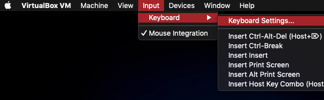
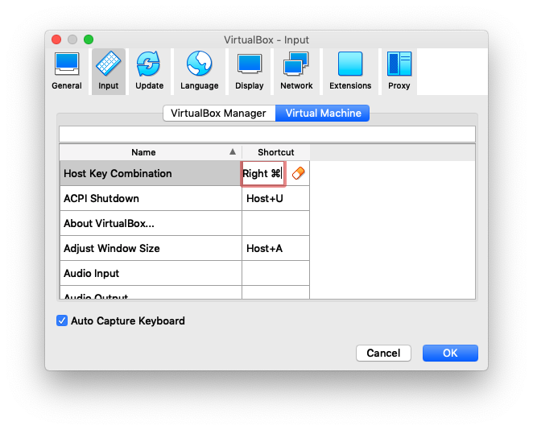

A.3 Configuration
Même si la SciViews Box est pré-configurée, vous allez avoir quelques manipulations simples à réaliser pour être complètement opérationnel. Ces étapes sont détaillées ci-dessous. Nous en profiterons par la même occasion par nous familiariser avec quelques uns des outils logiciels que vous utiliserez plus tard, à commencer par le lanceur rapide SciViews Box.
A.3.1 Lanceur SciViews Box
L’application que vous venez d’installer est un lanceur rapide qui facilite le démarrage, la fermeture et la gestion de votre machine virtuelle SciViews Box. Démarrez cette application et vous verrez la fenêtre suivante :

Dans ce premier cours, vous n’utiliserez pas toutes ses fonctionnalités. Ainsi, vous n’aurez pas besoin de Jupyter(lab), Adminer ou SSH, mais repérez les autres outils. Le message en rouge n’apparait pas systématiquement. Il signale des éléments importants. Ici, il indique que la configuration de la SciViews Box doit encore être faite, et pour cela, vous devez (1) la démarrer à l’aide du gros bouton en haut à gauche, (2) vous logger (mot de passe = sv), et (3) répondre Yes lorsqu’une boite de dialogue vous propose de configurer la SciViews Box comme ci-dessous :

Cette dernière étape est importante ! Ne cliquez pas No ici, sous peine de ne pas avoir une machine virtuelle configurée comme celle de vos collègues !
Le mot de passe vous sera redemandé, et ensuite, la configuration se poursuivra. Elle pourra prendre plusieurs minutes. Soyez patient. Vous pourrez ouvrir la fenêtre où s’opère le travail pour en suivre la progression, si vous le souhaitez. Pour ce faire, lancer une fenêtre de terminal (Win + T, Command + T, ou Control + T selon votre clavier et configuration). Ensuite entrez xfce4-terminal --drop-down suivi de la touche entrée. Sinon attendez simplement la fenêtre du configurateur de la SciViews Box qui va apparaître à la fin.
A.3.2 Configurateur de la Box

Prenez le temps de parcourir les différents éléments dans cette fenêtre66.
La partie à gauche en haut concerne la configuration du clavier. En effet, la machine virtuelle utilisera votre clavier physique, mais elle n’a aucun moyen de déterminer de quel modèle il s’agit. Vous allez donc l’indiquer maintenant. Utilisez la zone de texte intitulée Test area (type here) pour vérifier que la machine virtuelle interprète correctement les touches de votre clavier. Pour le changer, cliquez sur le bouton Change keyboard layout.

La boite de dialogue de sélection du clavier apparait. Elle propose des configurations différentes sous forme de représentations graphiques, avec les touches caractéristiques surlignées en jaune. Vous pouvez entrer les premières lettres du type de clavier pour aller directement à la configuration correspondante dans la liste (ex.: entrez be pour un clavier belge). Si votre clavier ne se trouve pas dans les templates les plus courants, configurez-le à l’aide du bouton Other keyboard.... Fermez cette fenêtre pour retourner au configurateur lorsque vous aurez fini. Attention que pour un clavier de Mac, vous devez utiliser la configuration intitulée fr(mac), comme dans la copie d’écran ci-dessus. Sur un PC, la configuration sera simplement be.
Enfin, toujours concernant le clavier, la case à cocher Exchange left CTRL / CMD (Mac shortcuts) permet d’utiliser les raccourcis Mac (comme Command-c pour copier et Command-v pour coller à la place de Ctrl-c ou Ctrl-v sur un PC).

Cette option n’est utile qu’aux possesseurs d’un Mac qui veulent avoir des raccourcis plus homogènes entre leur système MacOS hôte et la machine virtuelle67.

Notez que VirtualBox réserve une touche clavier à son propre usage. Par défaut, c’est la touche Command ou Win de droite sur les anciennes version, mais il se peut que ce soit la touche équivalente de gauche. Dans ce cas, vous aurez un conflit avec l’option Exchange left CTRL / CMD keys Vous devez redéfinir la touche hôte de VirtualBox. Allez dans son menu Input -> Keyboard -> Keyboard Settings...
Redéfinissez la touche utilisée par l’hôte comme étant la touche commande de droite.

Revenons à notre configurateur à l’intérieur de la SciViews Box. Juste en dessous des paramètres de clavier, vous voyez la configuration du fuseau horaire.

Ici aussi, votre machine virtuelle n’a pas l’information de votre système hôte, et peut donc ne pas afficher l’heure correctement. Vous avez la possibilité de corriger cela en cliquant sur le bouton Change time zone. Vous devez débloquer la boite de dialogue (bouton Unlock en bas, puis entrer le mot de passe pour pouvoir effectuer des changements).
Les trois boutons suivants à gauche en bas servent à choisir le style des fenêtres, le set d’icônes et l’image d’arrière plan de votre SciViews Box.

C’est ici que vous pourrez la paramétrer au mieux pour qu’elle vous plaise visuellement. A noter que, si vous double-cliquez sur les entrées dans les boites de dialogue de configuration, vous allez pouvoir prévisualiser l’effet en live. Utile pour apprécier le rendu avant de faire son choix !
Enfin dans la partie gauche, le dernier item permet de modifier l’apparence et le comportement du dock de la SciViews Box (qui s’appelle “plank”). Vous ne devriez pas le changer pour l’instant, mais vous pouvez quand même explorer les différentes options offertes ici.

La zone en bas à droite permet de modifier le mot de passe.

Pour rappel, il s’agit d’un mot de passe simple et peu sécurisé par défaut : sv. En fait, vous n’avez pas réellement besoin d’un mot de passe à l’intérieur de votre SciViews Box telle qu’elle est configurée car vous ne pouvez y accéder qu’en local à partir de l’ordinateur hôte. Par contre, il est possible d’ouvrir l’accès. A ce moment-là, il serait utile, et même indispensable, de modifier le mot de passe.
Dans le cadre de votre utilisation de la SciViews Box pour ce cours, que ce soit sur les machines de la salle de T.P., ou sur votre ordinateur personnel, ne changez pas le mot de passe ! Votre machine virtuelle est déjà protégée par votre système hôte puisque seul un accès local est autorisé.
La zone en haut à droite permet de configurer votre compte Git.

Comme vous allez utiliser Git et Github de manière intensive tout au long de ce cours, veuillez configurer cette partie du système correctement d’amblée! Les trois boutons du bas proposent de s’enregistrer sur trois systèmes distants d’hébergement de dépôts Git (si vous ne savez pas ce que c’est, imaginez juste que c’est là que vous allez pouvoir entreposer de manière sûre tous vos projets !): Github, Gitlab ou Bitbucket. Tous trois ont des avantages et des inconvénients, et ils proposent tous des utilisations gratuites dans certains cas.
Durant nos cours de Science des Données à l’UMONS et ceux de Bioinformatique et Science des Données sur le site de Charleroi, nous utiliserons Github. Cette utilisation sera gratuite pour vous, et vous allez déjà pouvoir commencer à construire votre identité professionnelle sur le Net par son intermédiaire. Donc, enregistrez-vous de manière sérieuse. Choisissez un login représentatif de vos nom et prénom, pas un truc louffoque ou rigolo sur le moment, mais que vous regretterez plus tard sachant que votre login ne pourra pas être changé plus tard ! Utilisez simplement une contraction facile à retenir de vos prénom et nom, telle que ce login n’existe pas encore sur Github (il faut parfois essayer plusieurs combinaisons différentes pour les noms courants).
Vous allez donc vous créer un compte sur Github en cliquant sur le bouton correspondant, et en indiquant un login et un mot de passe. Nous vous demandons également d’utiliser expressément et uniquement votre adresse email UMONS ici : prénom.nom@student.umons.ac.be. En effet, ce sera, pour nous, notre seul moyen de vous identifier sans erreur sur Github lorsque nous interviendrons pour vous conseiller et/ou pour corriger vos travaux.

Une fois enregistré sur le site de Github, reportez votre login et votre adresse email dans le configurateur de la SciViews Box, pour que Git puisse vous identifier correctement en local68.

Après avoir effectué tout ceci,vous pourrez cliquer sur le bouton OK de la fenêtre du configurateur SciViews Box. La machine virtuelle devra redémarrer pour appliquer toutes les modifications de manière durable. Cliquez donc également OK dans la boite de dialogue qui apparait ensuite (sinon, elle redémarrera toute seule après 30 sec) :

A.3.3 Installation des tutoriels
Nous allons maintenant installer les tutoriels liés à ces cours de science des données biologiques. Vous allez apprendre par la même occasion comment ajouter des applications dans votre SciViews Box. Cela se fait en trois étapes:
Télécharger l’installeur de l’application. Vous le trouverez à l’adresse http://go.sciviews.org/BioDataScience2. Assurez-vous de bien le charger dans le répertoire Downloads ou Téléchargements par défaut sur votre ordinateur69.
Rentrez dans le lanceur rapide de la SciViews Box. Il repère les autoinstalleurs et les déplace dans le dossier partagé pour les rendre utilisables par la SciViews Box. Vous devez voir un message indiquant la disponibilité d’autoinstalleur(s). Vos fichiers téléchargés ont également disparus du répertoire de téléchargement à ce stade,

- Rentrez dans la SciViews Box depuis le lanceur. Si la Box était déjà active ou si elle est réveillée du mode veille, vous allez devoir vous délogger et relogger pour que l’installation démarre, … sinon, vous allez voir directement le message suivant qui propose d’installer ces apps (cliquez sur
Yes, bien sûr, pour l’installer).

Si le message n’apparait pas, voici comment se délogger (log out).
Ensuite, entrez votre mot de passe comme d’habitude pour vous relogger… A ce moment, le message doit apparaitre, et l’installation doit se faire après avoir cliqué sur le bouton Yes.
Bravo! Vous avez terminé l’installation et la configuration de votre SciViews Box. Cependant, nous allons encore effectuer une petite opération qui vous facilitera la vie, et nous vous expliquerons par la même occasion comment accéder aux fichiers respectifs de la machine virtuelle et du système hôte dans la section suivante.
A.3.4 Accès aux fichiers
Le disque physique de votre ordinateur hôte, et le disque virtuel de la SciViews Box sont deux choses différentes. Cela signifie que vous avez, en réalité deux ordinateurs et deux disques indépendants. Donc, vous n’accédez pas aux fichiers d’une machine à partir de l’autre70. Ce n’est pas pratique, et ce n’est pas vrai pour un dossier particuler nommé shared.

Ce dossier shared est synchronisé en temps réel entre les deux systèmes. C’est donc l’endroit idéal pour échanger des données et pour faire collaborer vos deux machines. Inutile de préciser, donc, que nous travaillerons essentiellement à l’intérieur de ce dossier. Un sous-dossier, nommé projects sera utilisé pour héberger toutes nos analyses. Il est donc primordial d’y accéder facilement à la fois depuis l’ordinateur hôte et depuis la SciViews Box. Vous allez donc apprendre à retrouver ce dossier projects facilement.
Sur votre ordinateur hôte, ce dossier est un peu difficile à trouver en naviguant dans l’explorateur de fichiers (ou le Finder sur le Mac). Pour cette raison, le lanceur rapide propose un bouton pour y accéder plus facilement.
Une fois dans le dossier shared, nous vous conseillons d’épingler le sous-dossier projects dans les raccourcis rapides de votre explorateur de fichiers. Voici comment faire sous Windows et sous MacOS.
Sous Windows, cliquez bouton droit sur projects, et sélectionnez “épingler dans Accès rapide”.

Sous MacOS, vous glissez-déposez projects dans la barre latérale du Finder.

Dans la SciViews Box, ce dossier est accessible depuis deux endroits: /media/sf_shared et ~/shared (~ représente le répertoire de l’utilisateur, c’est-à-dire /home/sv). Ici aussi vous pouvez épingler votre dossier projects pour en facilter l’accès:
Les deux moyens d’accéder au dossier projects dans la SciViews Box (à partir de sf_shared ou de sv, puis `shared) et comment l’épingler sur le côté.

A retenir: le dossier shared et ses sous-dossiers comme projects sont considérés un peu comme des dossiers réseau par la SciViews Box. Cela implique que certaines fonctions du système de fichiers n’y sont pas accessibles. Parmi celles-ci, la poubelle. Donc, vous ne pourrez qu’effacer complètement des items en cliquant bouton droit et sélectionnant ‘Delete’ dans le menu contextuel dans le gestionnaire de fichiers. Si vous essayer de placer des fichiers ou dossiers depuis shared dans la poubelle de la SciViews Box, cela vous sera refusé (voir copie d’écran ci-dessous). Par contre, cela fonctionne très bien depuis l’ordinateur hôte (Windows, MacOS, …).

Un tout dernier point concernant les ordinateurs de la salle de T.P. de l’UMONS ainsi que pour ceux du laboratoire informatique du site de Charleroi. Pour des questions de performance, la machine virtuelle SciViews Box, et le dossier shared ne sont pas sur votre compte, mais directement sur le disque de l’ordinateur. Cela signifie qu’ils ne sont pas transportables vers un autre ordinateur. Vous pouvez créer une copie de shared dans mes documents ou sur une clé USB pour les transporter vers un autre ordinateur… mais nous verrons que cela n’est pas nécessaire pour tout ce que vous stockerez sur Github. En effet, vous avez accès à ces contenus depuis n’importe où via n’importe quelle connexion internet.
Si jamais vous voulez retourner plus tard au configurateur de la SciViews Box, vous n’aurez qu’à cliquer sur son icône tout en haut à droite dans la barre supérieure.↩
Le Mac définit ses raccourcis claviers différemment du PC. Outre l’inversion de l’utilisation des touches
CtrletCommand, le Mac possède deux touchesAlt, une à gauche et une à droite. Le PC a, par contre, deux touches correspondantes, mais celle de droite est nomméeAlt Gr. Ces touches jouent des rôles différents: raccourcis claviers pourAltet accès aux touches de niveau 3 et 4 pourAlt Gr. Pour les utilisateurs Mac, notez que vos deux touchesAltont des rôles différents dans la SciViews Box comme pour un clavier PC.↩A la première utilisation de Git à l’intérieur du logiciel RStudio, votre login et votre mot de passe vous seront également redemandés. De même, vous devrez également fournir ces informations dans Github Desktop et la première fois que vous naviguerez vers https://github.com depuis le navigateur Web de votre PC hôte. Mais ensuite, vous accèderez immédiatement au service.↩
Il pourra ainsi être replacé au bon endroit et exécuté dans la Box↩
Le presse-papier est synchronisé entre les deux machines pour le texte qui y est copié.↩